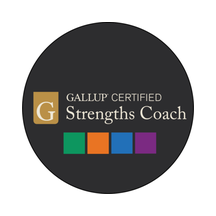
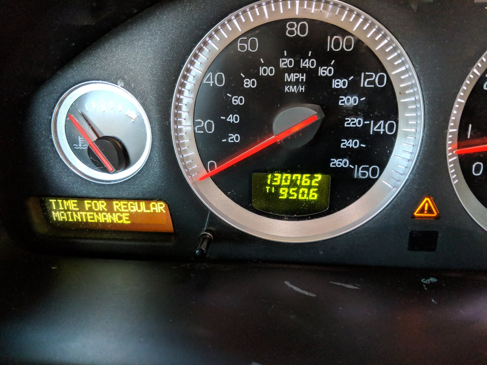
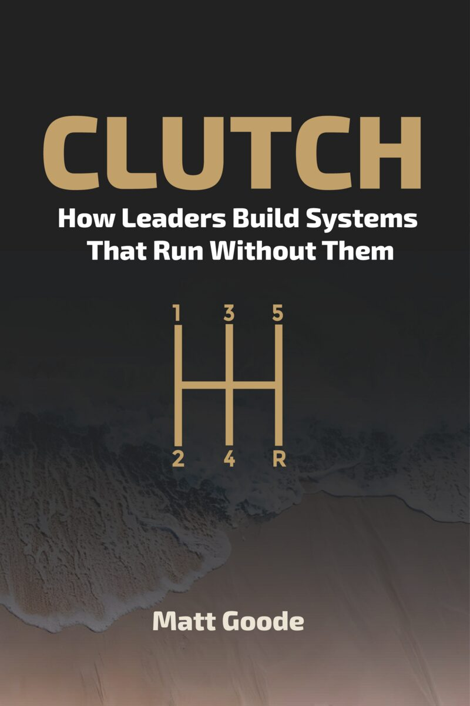

Your CliftonStrengths® report
Your full report, exactly as Gallup issues it, with a guide to reading it. It shows where your natural talent lies and how you tend to get things done.

GOODE DESIGN
OBD
Core · Leader · Leader + Team
Leader diagnostic · two instruments · one written read
Something keeps landing back on your desk, and you cannot tell whether it is you or the system.
Most cars have a port under the dashboard. A mechanic plugs into it before touching anything, because guessing is expensive. The On-Board Diagnostic does the same for a leader: two validated instruments, read against each other, so the work starts from how you actually operate under pressure rather than from what everyone assumes.

Why it matters
employees in Gallup's meta-analysis of strengths-based development, across 22 organizations, 45 countries and seven industries.
Gallup, 2015, updated 2026higher profit, by Gallup's estimate, in work units that received strengths-based development than in units that received less or none.
Gallup, 2015, updated 2026Asplund, J., Harter, J. K., Agrawal, S. and Plowman, S. K. The Relationship Between Strengths-Based Employee Development and Organizational Outcomes. Gallup, 2015, updated 2026.
What's in it

Your full report, exactly as Gallup issues it, with a guide to reading it. It shows where your natural talent lies and how you tend to get things done.
Your full report, exactly as Multi-Health Systems issues it, with a guide to reading it. It shows how you perceive and manage emotion, your own and other people's, and how that holds up under stress.

A written read of what the two results together suggest about how you operate under pressure, using CREATE and VOICES as the lens. Neither instrument makes that argument on its own, and neither publisher makes it for you.
A full read runs 15 to 20 pages in plain English. It does not repeat either report. It puts them side by side and says what they mean together, for this person, in this job.
The sample on the right is a fictional leader, with a few lines from each of the nine sections so you can see the shape of it. Your own read is about you, and it stays yours: participants own their results, and the read is designed to be useful on its own, portable to any coach or supervisor, whether or not anything else follows.
Sample · fictional leader
VP Engineering, 60-person software company. Fourteen months in the role.
Under pressure, Dana narrows. Both reports point the same way: she is at her best working a hard problem herself, quickly and thoroughly, and her read of other people drops furthest exactly when deadlines tighten. Her team experiences this as silence. Decisions arrive finished.
Her strengths cluster around getting hard things done and getting them right. Very little in her profile pulls toward persuading a room. When Dana changes someone's mind, she does it with evidence, not energy, and only once she is sure.
She notices more than she says. The gap between the two is the widest reading in her profile.
Her strengths say she earns trust through competence. Her EQ results say she rarely lets people see how she is doing. So her team trusts her work and guesses at her mood, and the guessing gets louder the closer a deadline is.
Operator is her default gear, and a good one. Independent is the gear she reaches for least: when she disagrees with a decision from above, she executes it well and says nothing. Her team reads the silence as agreement.
Dana is the person everyone wants on the hard problem, and the last person anyone tells about a hard week.
What to watch at ninety days: whether her direct reports start bringing her problems before they have solved them, or after.
Fictional leader, written to show the structure. This is a few lines from each section; a full read runs 15 to 20 pages, written about you.
Three ways in
$450 per participant
Or five places for $2,000
The quickest way to find out whether any of this is useful to you.
$600 per participant
The same diagnostic, with the strengths report written for the job you actually do.
$3,500 per leader
For executives who want their team's read as well as their own.
The OBD shows how you operate. The Check shows how your team experiences it. Together they show the gap between intent and impact.
Book thirty minutes to pick a level
At every level, the read arrives within 10 business days of your completing both assessments. Assessment codes are bought on your behalf, and the results are yours to keep. Executive coaching on its own, six sessions of ICF-style coaching, is a separate offer and requires a completed OBD. Assessment fees are included at every level, and the price is the same for every buyer. Schools and nonprofits: we agree a discount on a call. Every school rate is on the published rates page.
Why this is different
A firm sells you a partner and staffs the work with people you have not met. These engagements are the other shape. Five differences, all structural, all checkable.
How this fits CLUTCH
CLUTCH treats an organization as a drivetrain. Every other component is built to grip. The clutch is built to slip, on purpose, so that parts turning at different speeds can engage without shearing. In a leader, that mechanism is emotional intelligence, and it is what connects CREATE, VOICES, the 6C Compass and DELEGATE.
Strengths tell you where your power comes from. EQ tells you whether that power reaches anyone else. The OBD reads both, because power that never engages goes nowhere.

The whole operating system
CREATE, VOICES, the 6C Decision Compass and DELEGATE, in one book, and how they turn a team that depends on you into one that keeps deciding when you are out of the room.
For leaders
You do. Participants own their results. Where an employer pays, I confirm that the engagement is active and nothing further without your written consent.
Both are online and taken separately, in your own time. Most people finish each one in a single sitting.
Yes. The read is designed to be useful on its own and portable to any coach or supervisor. Every level still comes with one coaching debrief with me, so you go through both reports and the read with the person who wrote it. OBD Leader + Team includes six sessions, the first of them the debrief.
No. The OBD is for development. It is not a selection tool and it is not used to rate anyone.
If it is not a fit I will say so on the call and send you the chapter that is. No deck, no follow-up sequence, no second call you did not ask for. Not ready to talk? Take the free five-question diagnostic
CliftonStrengths® is a trademark of Gallup, Inc.; EQ-i 2.0 is a trademark of Multi-Health Systems Inc.; neither has approved or endorsed this offer. Statistics are as published by Gallup.